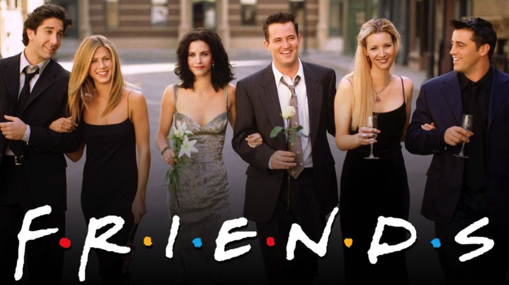
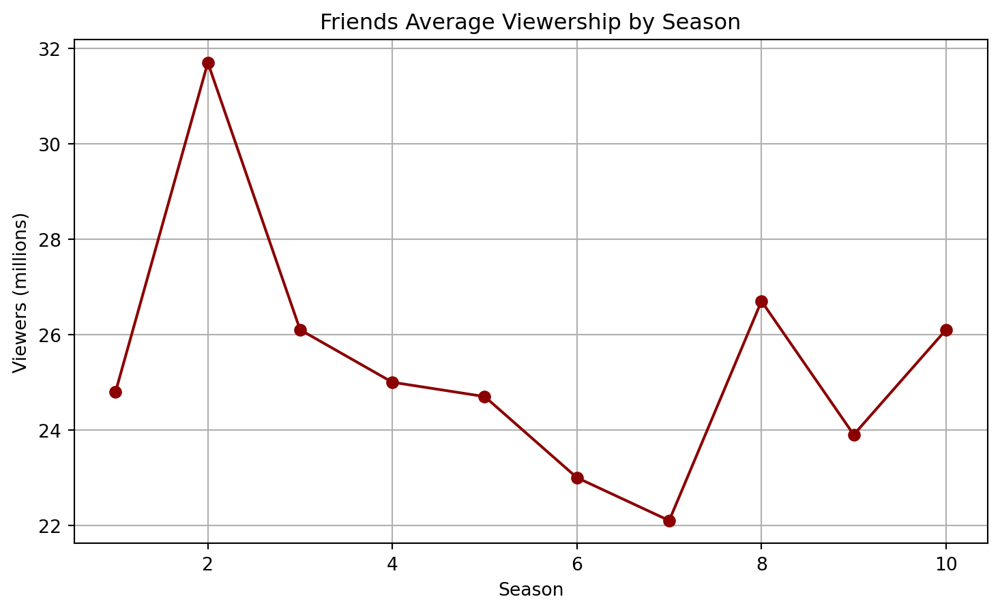
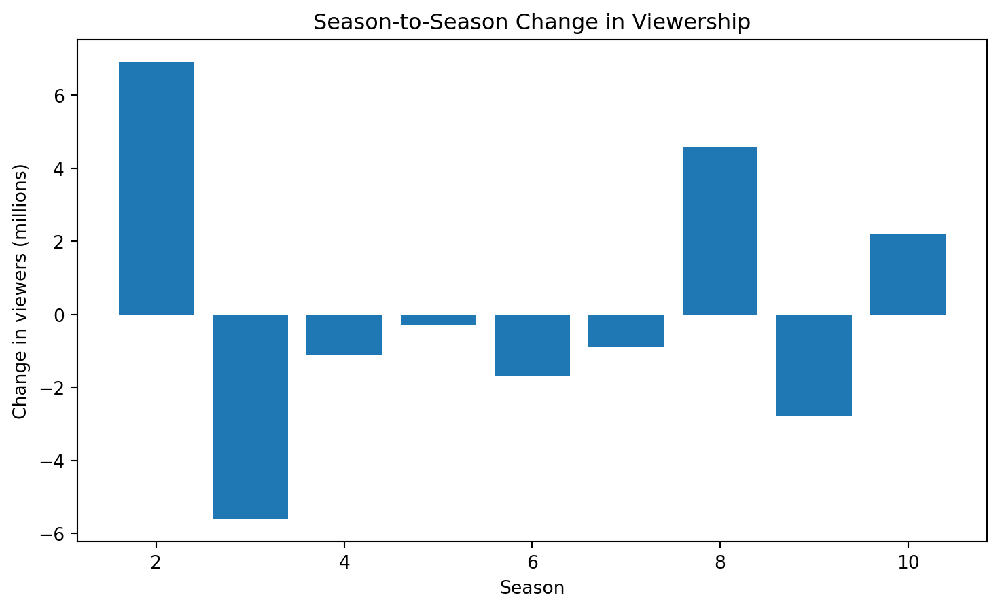

count 10.00
mean 25.41
std 2.63
min 22.10
25% 24.10
50% 24.90
75% 26.10
max 31.70
Name: Viewers, dtype: float64TV Show Report - Friends
Introduction
Friends is an American television sitcom created by David Crane and Marta Kauffman. The series aired on NBC from September 22, 1994, to May 6, 2004, and lasted for ten seasons. The show follows the everyday lives of six close friends living in Manhattan, New York City. The main characters are Rachel Green, Ross Geller, Monica Geller, Chandler Bing, Joey Tribbiani, and Phoebe Buffay, who experience friendships, romantic relationships, career challenges, and personal growth throughout the series. Much of the story takes place in Monica’s apartment and the Central Perk coffee shop.
Friends became one of the most successful and influential sitcoms in television history. All ten seasons ranked within the top ten television ratings in the United States, and the show reached the number one position during its eighth season. The series finale aired on May 6, 2004, and attracted approximately 52.5 million American viewers, which makes it one of the most-watched television finales in history. Its success also led to the spin-off series Joey and the reunion special Friends: The Reunion.

Data Analysis
This section presents statistical information and visualizations related to the average season viewership of this TV show.
Basic Statistics
The following table summarizes the key statistics of the dataset, including ratings and average viewership.
As we can see from the basic statistics, the average season viewership of Friends was approximately 25 million viewers. The highest average audience was 31.7 million viewers, while the lowest average audience was 22.1 million viewers. The standard deviation of approximately 2.63 million viewers suggests that the show’s popularity remained relatively stable throughout its ten seasons.
Viewership Over Time
The following graph illustrates the average number of viewers per season from seasons 1 to 10.

The above graph shows that viewership increased significantly between season 1 and season 2, which rises from 24.8 million viewers to 31.7 million viewers.
However, the average audience gradually declined for several seasons after season 2 before increasing again during season 8. Season 8 marked a significant recovery in audience numbers, with average viewership increasing to 26.7 million viewers. It also became the highest-ranked season of the series in U.S. television ratings.
Season-to-Season Changes
The following graph presents the changes in average viewership between different seasons.

As we can see the season-to-season changes highlight several major shifts in audience behavior.
The largest increase occurred between season 1 and season 2, when average viewership increased by approximately 6.9 million viewers. And the largest decrease occurred between season 2 and season 3, where the audience dropped by approximately 5.6 million viewers.
Despite several declines in later seasons, the series maintained consistently high viewership numbers throughout its entire runtime. Overall, the data demonstrates that Friends remained one of the most successful and widely watched sitcoms in television history.
Note: Some text sections were modified with the assistance of generative AI and later reviewed manually.